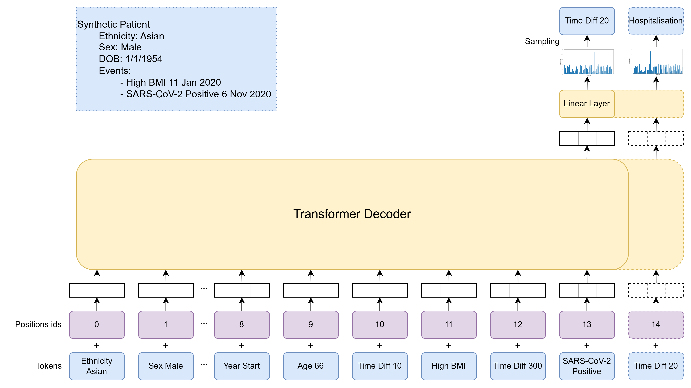
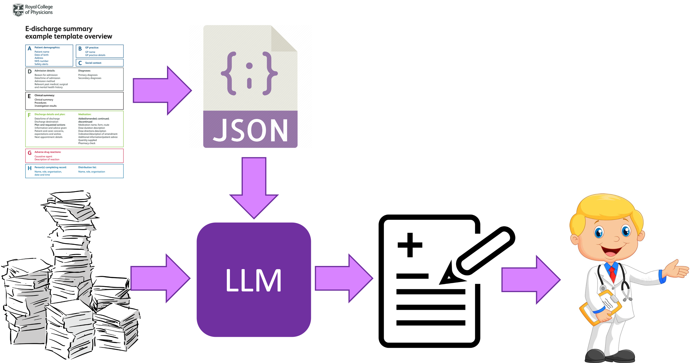
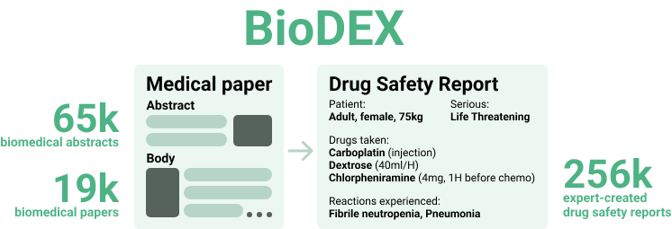
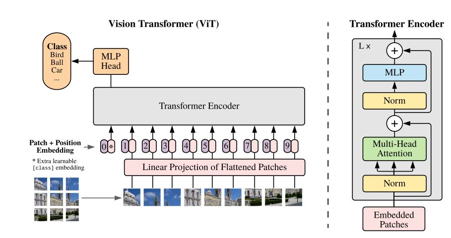

Simon Ellershaw
Contact: simon.ellershaw.20@ucl.ac.uk
Hello 👋 I'm a final-year PhD candidate at UCL's UKRI Centre for Doctoral Training in AI-Enabled Healthcare. I am also based at the Alan Turing Institute, the UK's National Institute for Data Science and Artificial Intelligence. I hold an MSc in Computer Science from Imperial College London and a BSc in Natural Sciences from Durham University.
Over the past four years, I've also worked in industry as an NLP Engineer at Parexel AI Labs, following a year-long internship in San Francisco.
My PhD explores applications of large language models in healthcare, with projects including:
- 📝 Inference: Automated generation of discharge summaries
- 🧠 Pre-training: Foresight, the UK's first national AI healthcare model
- 🔬 Post-training: Watch this space...
Recent Projects
Foresight
The UK's first national AI healthcare model, a generative auto-regressive transformer model trained from scratch on 50+ million de-identified coded NHS England patient records. As a general-purpose medical event prediction model, Foresight supports zero-shot predictions across a broad spectrum of medical events, including COVID-19, enabling scalable, data-driven clinical insights.
Press
Nature BBC Radio New Scientist The Independent The Telegraph The Mirror UCLBlog Posts
The UK just trained a generative AI on health records from 57 million patients Foresight AI: The UK's Bold Gamble on Predictive Healthcare AI at Scale, Made with the NHS…but Why Aren't We Celebrating?Presentations
UK Generative AI Hub Launch [Poster]
3 minute thesis (Departmental Prize) [Slides]
Automated Discharge Summaries
Developing a system to automate discharge summaries using large language models guided by clinical guidelines. Completed a proof of concept using publicly available data, and currently conducting a retrospective study within a UCLH.
Publications
AAAI 2024 Spring Symposium Series Clinical FMs [Abstract] [Poster]
Presentations
Healtac 2024 [Slides]
Manchester University UCL MSC Health Informatics Guest Lecture [Slides]
Resources
GitHub RepositoryBioDEX: Adverse Drug Event Extraction
BioDEX is a large-scale dataset designed to enhance automated extraction of Adverse Drug Events (ADE) from biomedical literature using NLP, supporting more efficient pharmacovigilance. Benchmarking against human performance reveals both the challenges and promise of AI-assisted drug safety monitoring. A collaboration between Parexel AI Labs and Stanford University.
3D Infant Pose Estimation
Development of a deep learning model for 3D infant pose estimation, outperforming existing methods without relying on depth data. This work lays the foundation for automated movement assessment tools that could aid in early diagnosis of neurological disorders like cerebral palsy.
Publications
Medical Imaging Meets NeurIPS 2020 [Abstract] [Oral Presentation]
CVPR 2021 [Paper]
Resources
GitHub Repository Project SiteDiabetic Retinopathy Vision Transformer
Applying vision transformers to the task of diabetic retinopathy classification (and comparing to CNNs). In collaboration with Moorfield's Eye Hospital
Presentations
Generative AI in the NHS
MSD Pharmaceuticals [2025 Slides]
Introduction to Large Language Models
1st Year UCL Medicine: Artificial Intelligence in Healthcare Student Selected Component [2025 Slides]
AI in Healthcare: Is it all hype?
Ulfasa Meeting on Education and Leadership in Palliative Care at Emmanuel College Cambridge [2024 Slides]